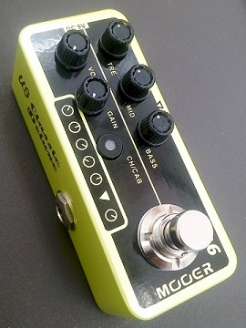
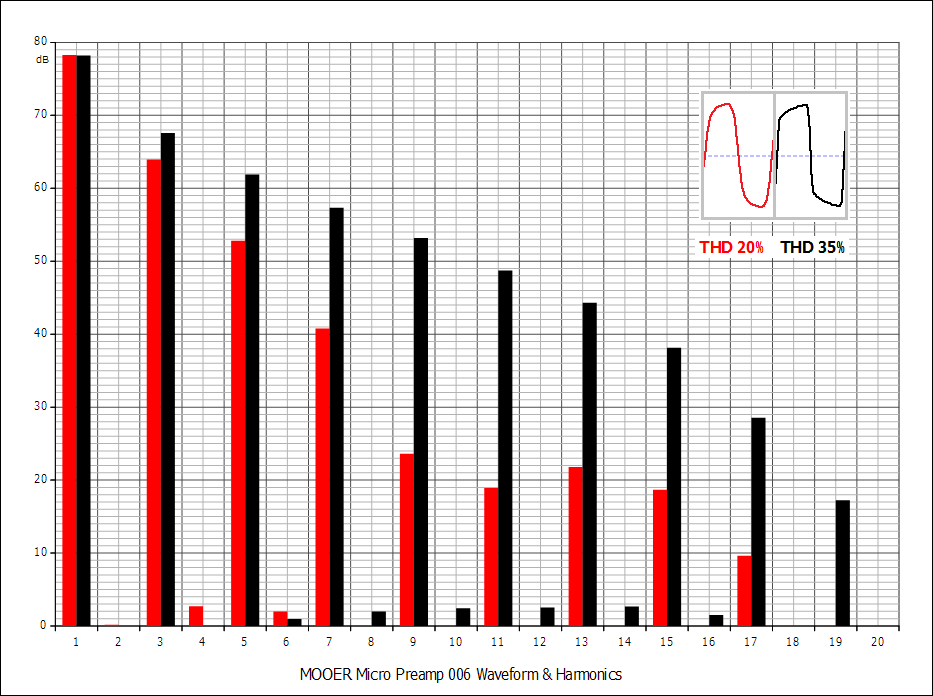
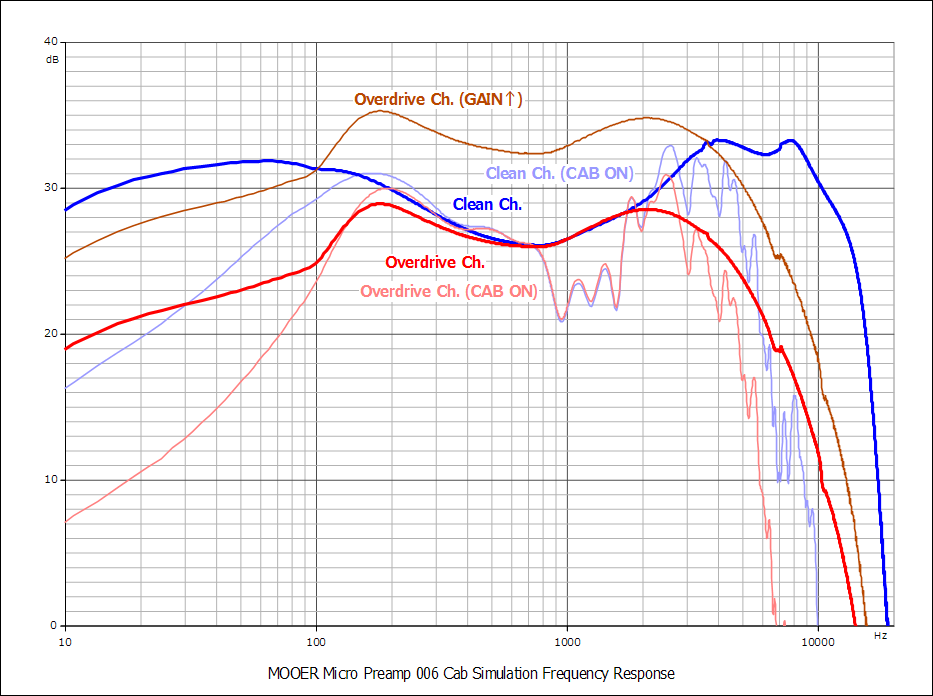
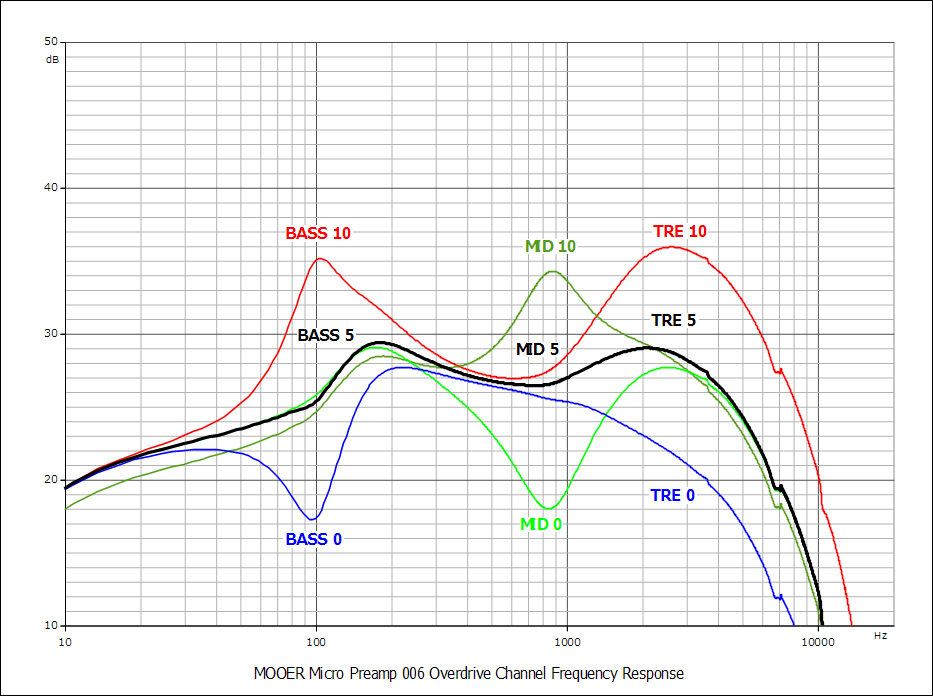
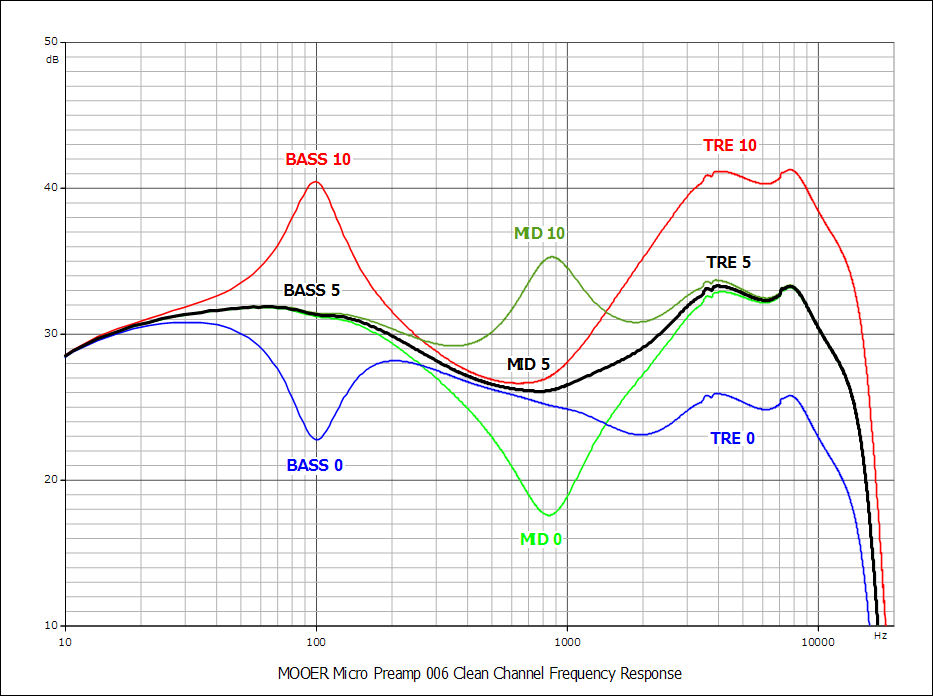
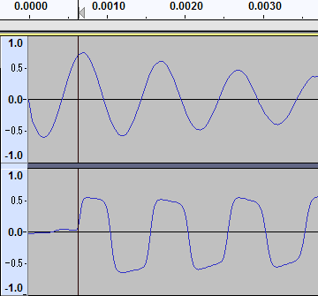

MOOER Micro Preamp 006 特性測定
2018年07月29日 カテゴリー：修理・改造・解析

MOOER Micro Preampは小型デジタルプリアンプということで、中身が気になり購入してみました。元になったモデルはぼかしてあることが多いですが、006の場合「Based on Fender blues deluxe」と公式動画に記載があります。とりあえずろくに弾きもせずに特性を測定しました。以下オーバードライブチャンネル（LEDが赤に点灯）をAch、クリーンチャネル（LEDが青に点灯）をBchと表記しています。
▽波形・倍音（Ach）

真空管の歪みのはずですが、特に偶数次倍音が出やすいというわけではありませんでした。
▽周波数特性
＜ゲイン変更・キャビネットシミュレータ＞
AchとBchで1kHz時同じ音量になるように調整しています。BASS、MID、TRE全て5（12時の位置）です。

AchではBchより高域と低域が削られていることがわかります。ゲインを上げた時の特性変化はほとんどなく、わずかに高域が落ちる程度です。キャビネットシミュレータをオンにした時の変化幅はAchとBchで変わりません。
＜Ach＞

＜Bch＞

トーンコントロールの効き方はAchとBchで変わりません。あまり変化幅は大きくなく、BASSとMIDはグラフィックイコライザの変化のような感じに見えます。マニュアルには下記のように記載があるので、コントロールの変化の仕方は元になったモデルと同じではないということがわかります。
3つのノブを全て12時の位置にするとプリアンプはMooerにてアナライズした時のサウンドになります。時計回りで周波数をブーストし、反時計回りでカットします。各ノブの帯域はモデルごとに最適に調整されています。
▽レイテンシー→測定方法はこちら

約0.6msです。1ms以下というのがもはや当たり前になっているのかもしれません。
ノイズも測定しようとしましたが、私の環境では測定限界以下だったので特に問題ないでしょう。ハードウェアについては別記事にしました。→MOOER Micro Preamp 006 分解